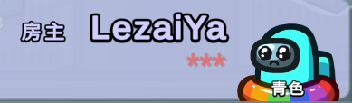

When Final Suspect detects prohibited content in chat (such as insults, advertisements, or sensitive information), it will automatically replace those words with asterisks (\*) without affecting the rest of the message.
This feature effectively reduces the spread of inappropriate content while maintaining chat readability.
You can disable this feature in the settings.
FinalSuspect
Block Banned Words
Banned Word Filter Demo：
